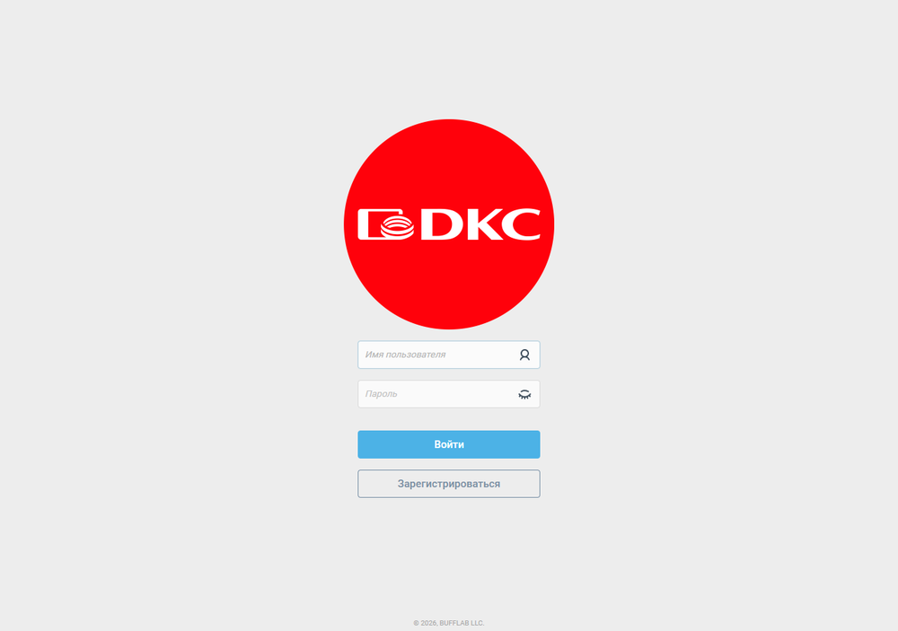
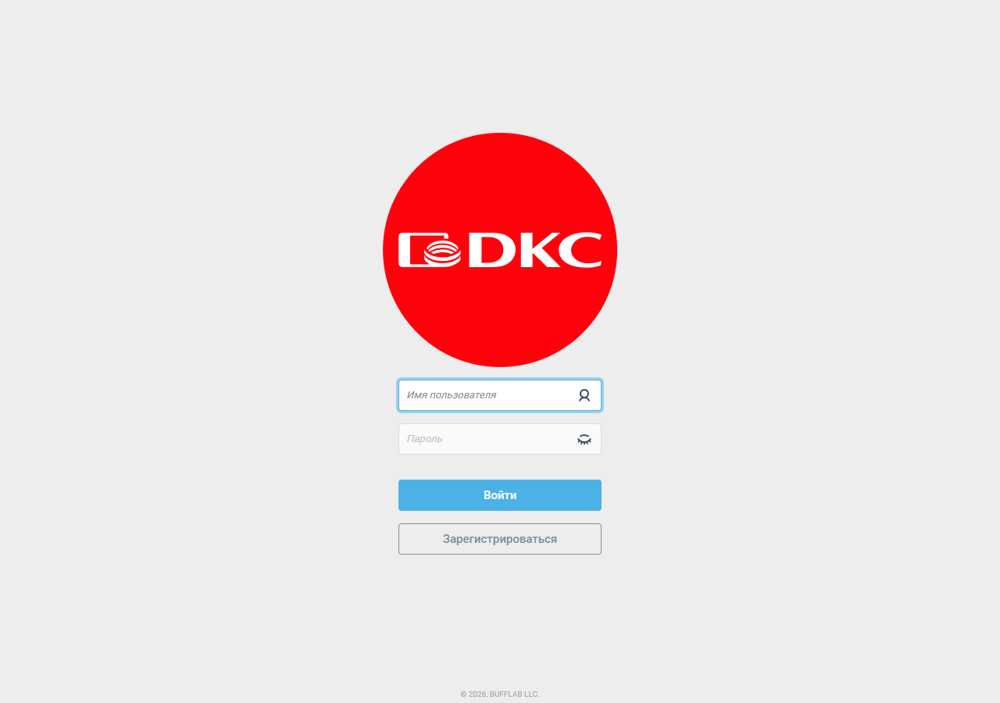
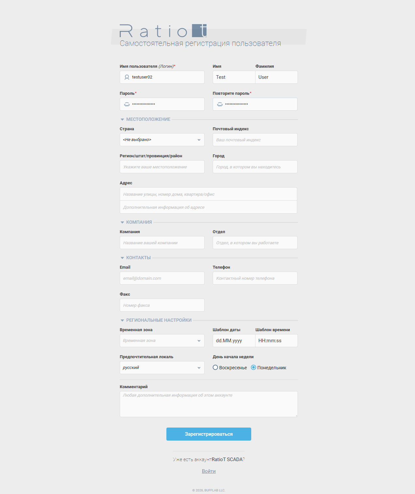
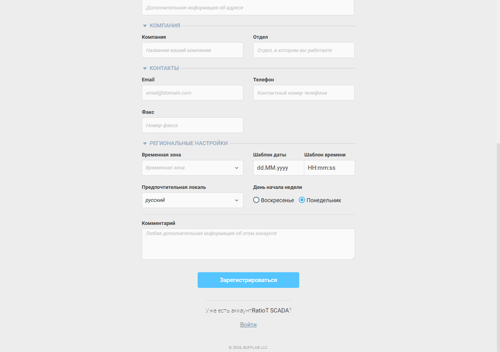
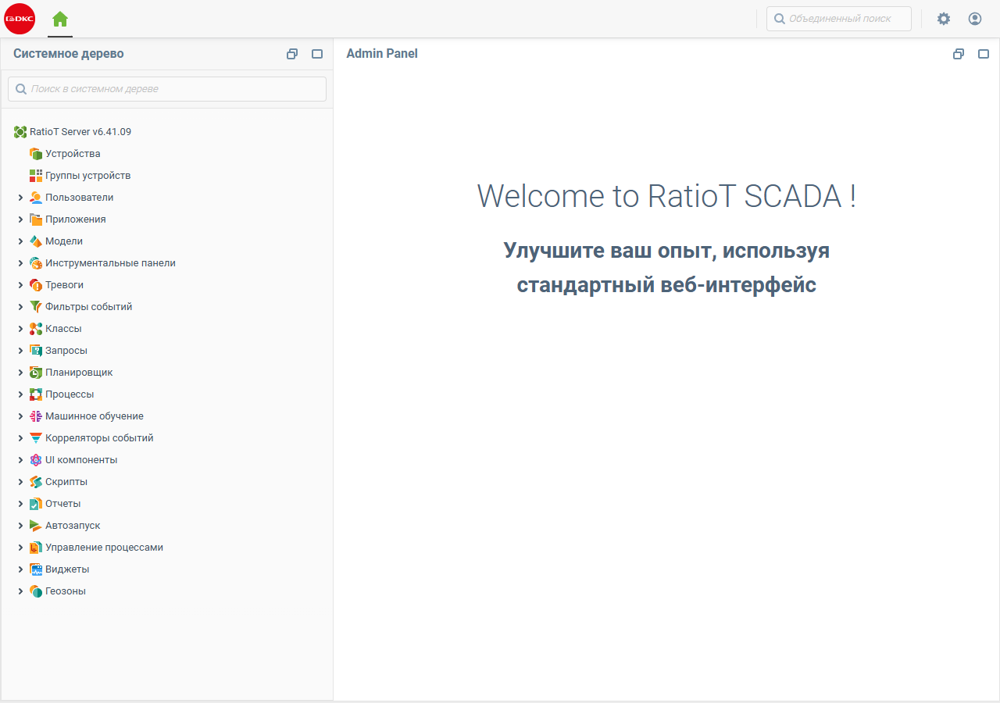
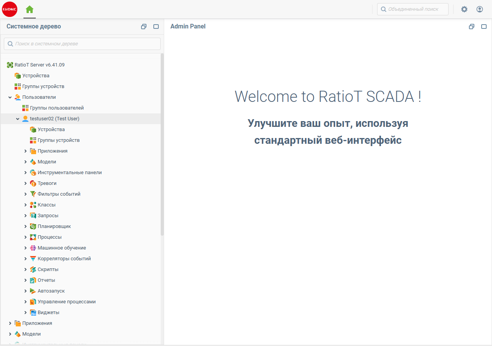

Баг-кейсы RatioT SCADA 6.41.09
Дата тестирования: 13.08.2026
Версия: RatioT Server 6.41.09-2456
Контур: локальная установка C:\Program Files\RatioTScada
Учётные данные для тестов: admin / admin, тестовый пользователь testuser02 / TestPassword123!
Кейс 1. Ошибки создания ресурсов при первом запуске сервера
Серьёзность: Medium
Тип: Ошибка инициализации
Описание
При первом запуске RatioT_server_console.exe сервер стартует, но в журнале фиксируются 3 ERROR. Часть встроенных моделей и отчётов не инициализируется.
Воспроизведение
- Установить RatioT SCADA 6.41.09 на чистую Windows.
- Запустить
C:\Program Files\RatioTScada\RatioT_server_console.exe. - Дождаться строки
Starting web server. - Открыть
C:\Program Files\RatioTScada\logs\server.log. - Найти строки с
ERROR ag.context.
Ожидаемый результат
Первый запуск завершается без ERROR/FATAL.
Фактический результат
13.08.2026 12:47:25,471 ERROR ag.context
Error creating resource 'users.admin.models.avatarManagement':
Cannot invoke "...Context.callFunction(...)" because "container" is null
13.08.2026 12:47:25,733 ERROR ag.context
Error creating resource 'users.admin.reports.maintenance':
Контекст недоступен: users.admin.reports
13.08.2026 12:47:26,509 ERROR ag.context
Error creating resource 'users.admin.models.workflowModel':
Cannot invoke "...Context.callFunction(...)" because "container" is null
Скриншоты
- Лог-файл: см.
C:\Program Files\RatioTScada\logs\server.log - Автотест фиксирует проблему:
tests/test_ui_ux.py→test_log_errors()
Кейс 2. Токен в URL не авторизует пользователя в Web UI
Серьёзность: Medium
Тип: UX / deep linking
Описание
Передача JWT-токена в URL дашборда (/web/dashboards/...?token=<token>) не авторизует пользователя. SPA перенаправляет на форму логина.
Воспроизведение
- Получить токен:
bash curl -k -X POST -H "Content-Type: application/json" \ -d '{"username":"admin","password":"admin"}' \ https://localhost:8443/rest/auth - Открыть в браузере:
https://localhost:8443/web/dashboards/users.admin.dashboards.default?token=<token> - Убедиться, что открылась страница логина.
Ожидаемый результат
Токен принимается, пользователь попадает в дашборд.
Фактический результат
Открывается форма логина.
Скриншоты

— страница входа вместо дашборда
— та же страница входа при открытии URL с токеном
Кейс 3. Противоречивая документация внутри программы
Серьёзность: Low
Тип: Документация / терминология
Описание
Файл admin/custom/templates/docs/cl_dashboard.htm утверждает, что инструментальные панели можно использовать только в десктопном RatioT Client, в то время как остальная документация позиционирует панели как часть Web UI.
Воспроизведение
- Открыть в браузере:
https://localhost:8443/static/docs/cl_dashboard.htmhttps://localhost:8443/static/docs/ls_wui_dashboards.htm- Сравнить первые абзацы.
Ожидаемый результат
Единая терминология: Web UI — основной способ работы с панелями; RatioT Client — устаревший/альтернативный вариант.
Фактический результат
Пользователь может запутаться, где реально работают дашборды.
Кейс 4. Саморегистрация: заголовок «Admin Panel» и системное дерево для саморегистрированного пользователя
Серьёзность: Medium
Тип: UX / брендинг / документация
Что говорит документация
- В
ls_config_general.htmпараметр Включить саморегистрацию пользователя (usersSelfRegistration = true) описан так:
«Если
usersSelfRegistration = true, любой пользователь может зарегистрироваться, войти в систему и использовать RatioT Server.»
- В
ls_config_default_permissions.htmсказано:
«Права доступа по умолчанию — это глобальное свойство конфигурации сервера, определяющее права доступа по умолчанию и доступность ресурсов для вновь создаваемых пользователей RatioT Server. Оно используется при построении таблицы прав и таблице ресурсов при создании нового пользователя.»
- В
ls_users_self_registration.htmсказано:
«Саморегистрация пользователя позволяет операторам RatioT SCADA создавать собственные учетные записи, используя любой из Пользовательских Интерфейсов RatioT Server.»
Учётные данные для воспроизведения
- Логин:
testuser02 - Пароль:
TestPassword123!
Воспроизведение
- Открыть
https://localhost:8443/web/login. - Нажать Зарегистрироваться.
- Заполнить обязательные поля:
- Имя пользователя:
testuser02 - Имя:
Test - Фамилия:
User - Пароль:
TestPassword123! - Повторите пароль:
TestPassword123! - Нажать Зарегистрироваться.
- После успешной регистрации открывается Admin Panel с системным деревом.
- Повторно выполнить вход под
testuser02— открывается тот же Admin Panel.
Проверка через REST API
# Получаем токен testuser02
curl -k -X POST -H "Content-Type: application/json" \
-d '{"username":"testuser02","password":"TestPassword123!"}' \
https://localhost:8443/rest/auth
# Проверяем доступные контексты
for ctx in users.admin users.testuser02 users.admin.devices users.testuser02.devices; do
curl -k -H "Authorization: Bearer <token>" \
https://localhost:8443/rest/v1/contexts/$ctx
done
Результаты:
- users.admin → HTTP 400, «Контекст не найден: users.admin-users.admin.devices→ HTTP 400, «Контекст не найден: users.admin.devices
- users.testuser02 → HTTP 200, доступен собственный пользовательский контекст
- users.testuser02.devices → HTTP 200, доступен собственный контекст устройств
Уточнение
Права доступа работают корректно: саморегистрированный пользователь не имеет доступа к users.admin. В системном дереве он видит только свой контекст users.testuser02 и его подразделы. Проблема не в RBAC, а в UI/UX: заголовок окна «Admin Panel» и общий вид системного дерева с разделами «Пользователи», «Приложения», «Модели» и т.д. создают впечатление, что пользователь получил административный доступ. Документация позиционирует саморегистрацию как инструмент для операторов, но интерфейс после входа не даёт понять, что это обычный операторский аккаунт, а не администратор.
Ожидаемый результат
- Для саморегистрированного/операторского пользователя заголовок не должен быть Admin Panel.
- В системном дереве или в приветственном экране должно быть понятно, что пользователь работает в рамках своего персонального контекста (
users.testuser02).
Фактический результат
Саморегистрированный пользователь видит Admin Panel и системное дерево, идентичное тому, что видит администратор, хотя реально доступен только users.testuser02. Это может ввести в заблуждение оператора и службу поддержки.
Скриншоты
- — форма регистрации

— заполненная форма
— сразу после регистрации открывается Admin Panel — вход под
— вход под testuser02, открывается Admin Panel
— заголовок Admin Panel для саморегистрированного пользователя
— в дереве толькоtestuser02,users.adminотсутствует
Кейс 5. Консольный вывод Playwright повреждён (кодировка)
Серьёзность: Low
Тип: Окружение / локализация
Описание
При запуске tests/ui_automation.py в Git Bash русские сообщения в stdout отображаются как ��������. Это не влияет на функциональность, но затрудняет отладку.
Воспроизведение
- Запустить
python tests/ui_automation.pyиз Git Bash. - Обратить внимание на русский текст в консоли.
Ожидаемый результат
Корректный вывод UTF-8.
Фактический результат
Кракозябры из-за несоответствия кодировки терминала.
Кейс 6. Режимы лицензирования free / trial не описаны в документации
Серьёзность: Medium
Тип: Документация / лицензирование
Описание
Инсталлятор RatioT SCADA 6.41.09 предлагает выбор между двумя режимами: - Пробная лицензия (30 дней) - Бесплатная лицензия на 100 тэгов
Однако в официальной документации (licensing.htm, ls_license_server.htm, ls_config_license_server.htm, ls_requirements.htm) описаны только именные лицензии, привязанные к инсталляции, и централизованный сервер лицензий. Пробный и бесплатный режимы не упоминаются.
Воспроизведение
- Запустить установку
RatioT SCADA 6.41.09. - На шаге «Выберите тип лицензии» увидеть два варианта: «Пробная лицензия (30 дней)» и «Бесплатная лицензия на 100 тэгов».
- Открыть
https://localhost:8443/static/docs/licensing.htm. - Убедиться, что раздел описывает только именные лицензии и активационный ключ.
- Проверить
ls_license_server.htmиls_config_license_server.htm— там также нет описания free/trial.
Ожидаемый результат
Документация должна содержать раздел о бесплатном и пробном режимах: какие ограничения, как переключаться, что происходит по истечении срока/при превышении лимита тегов, можно ли использовать в продакшене.
Фактический результат
Пользователь видит в инсталляторе режимы, о которых в документации ни слова. Непонятно: - чем отличаются free и trial; - что будет после 30 дней или после 100 тегов; - можно ли перейти с free/trial на полную лицензию без переустановки.
Скриншоты
 — диалог выбора лицензии в инсталляторе
— диалог выбора лицензии в инсталляторе
Ссылки на документацию
admin/custom/templates/docs/licensing.htmadmin/custom/templates/docs/ls_license_server.htmadmin/custom/templates/docs/ls_config_license_server.htm
Кейс 7. Инсталлятор запрашивает перезапись собственных файлов
Серьёзность: Low
Тип: Установка / UX
Описание
При установке RatioT SCADA 6.41.09 инсталлятор выдаёт диалог «Файл уже существует. Вы хотите, чтобы программа установки заменила его?» для файлов внутри C:\Program Files\RatioTScada\admin\custom\templates\docs_ru\wizard_1.png и wizard_2.png. Это создаёт впечатление, что установка повторяется поверх существующей, или что инсталлятор не может корректно управлять своими же файлами.
Воспроизведение
- Запустить установку RatioT SCADA 6.41.09.
- Пройти шаги до копирования файлов.
- Дождаться диалога с предложением заменить
docs_ru\wizard_1.png. - Нажать «Да для всех».
- Через некоторое время появится аналогичный диалог для
docs_ru\wizard_2.png.
Ожидаемый результат
На чистой установке инсталлятор не должен спрашивать о перезаписи собственных файлов. Если это обновление — должен быть единый диалог «Заменить все» или тихая перезапись без лишних подтверждений.
Фактический результат
Пользователь вынужден несколько раз вручную подтверждать перезапись файлов, которые только что были скопированы установщиком. Это выглядит как ошибка упаковки инсталлятора: одни и те же файлы попадают в разные компоненты/директории и конфликтуют при распаковке.
Скриншоты
 — диалог перезаписи
— диалог перезаписи wizard_1.png — диалог перезаписи
— диалог перезаписи wizard_2.png
Примечание
Скриншоты предоставлены в файле incoming/скрины.docx.
Кейс 8. Импорт Modbus-регистров из CSV/XML теряет имена, описания и адреса; экспорт в CSV портит русскую кодировку
Серьёзность: High
Тип: Импорт / экспорт данных
Описание
При создании пустого Modbus-устройства и импорте регистров из ранее экспортированных файлов CSV/XML теряются имя, описание, адрес, размер и другие поля. Импорт того же файла в формате .tbl работает корректно. Кроме того, окно экспорта не содержит кнопки закрытия — чтобы выйти, пользователь вынужден что-то экспортировать. При экспорте регистров с русскими именами/описаниями в CSV в полученном файле русский текст отображается кракозябрами.
Воспроизведение
- Открыть
https://localhost:8443и войти подadmin / admin. - Перейти в дереве: Устройства → modbus → Конфигурация → Регистры устройства.
- Создать несколько регистров с именами и описаниями на русском языке.
- Нажать кнопку экспорта и сохранить файл в форматах
.csv,.xml,.tbl. - Удалить все регистры или создать новое пустое Modbus-устройство.
- Импортировать сохранённые
.csvи.xml. - Сравнить заполненность полей с исходными данными и с импортом
.tbl. - Открыть экспортированный
.csvв Excel/Notepad++ и проверить кодировку русских строк.
Ожидаемый результат
- CSV и XML импортируют все поля аналогично
.tbl. - Диалог экспорта можно закрыть без выполнения экспорта.
- CSV-файл содержит корректную UTF-8 / Windows-1251 кодировку для русских символов.
Фактический результат
- После импорта CSV/XML поля Имя, Описание, Десятичный адрес, Размер остаются пустыми.
- Диалог экспорта нельзя закрыть без экспорта.
- CSV-файл содержит нечитаемые символы вместо русского текста.
Скриншоты
 — пустое устройство modbus перед импортом
— пустое устройство modbus перед импортом — после импорта CSV: пустые имена/описания и адреса
— после импорта CSV: пустые имена/описания и адреса — после импорта TBL: данные на месте
— после импорта TBL: данные на месте — диалог экспорта без кнопки закрыть
— диалог экспорта без кнопки закрыть — CSV с искажённой кодировкой
— CSV с искажённой кодировкой
Источник
Материалы коллег из incoming/Баги с импортом и экспортом Modbus регистров в форматах csv и xml.docx.
Кейс 9. Настройки колонок компонента eventLog сбрасываются при поступлении событий
Серьёзность: High
Тип: Web UI / дашборды / компонент eventLog
Описание
В дашборде добавлен элемент Журнал событий (eventLog). В расширенных настройках на вкладке Колонки включена опция «Ширина колонок настроена вручную», задан порядок колонок, их ширина и видимость. Настройки применяются, пока событий нет; как только поступает событие, таблица возвращается к дефолтному виду и отображаются все колонки, включая скрытые.
Воспроизведение
- Открыть дашборд (например,
АВР.Главный экран). - Добавить или отредактировать компонент Журнал событий.
- В разделе Расширенные → Колонки включить «Ширина колонок настроена вручную».
- Скрыть колонки Подтверждение и Обогащение, задать порядок и ширину остальных.
- Сохранить дашборд.
- Дождаться/сгенерировать событие (например, переключение режима работы).
- Убедиться, что таблица вернулась к стандартному набору колонок.
Ожидаемый результат
Настроенные колонки сохраняются независимо от наличия событий.
Фактический результат
При поступлении события отображаются все колонки, настройки не применены.
Скриншоты
 — редактор дашборда с выделенным eventLog
— редактор дашборда с выделенным eventLog — настройки колонок без данных
— настройки колонок без данных — список полей eventLog
— список полей eventLog — журнал с событием: видны все колонки
— журнал с событием: видны все колонки — после события настройки не восстановились
— после события настройки не восстановились
Источник
Тикет ASD-6406 из incoming/Тикеты в АГ от ДИР.docx.
Кейс 10. В дереве тегов невозможно выбрать абсолютную модель в качестве источника
Серьёзность: Medium
Тип: UX / дерево тегов / документация
Описание
На вебинаре по RatioT SCADA 6.4 озвучивалось, что при привязке тегов цифрового двойника в дереве тегов источником можно выбирать не только устройство, но и абсолютную модель. В текущей версии такой возможности нет, а в документации описание отсутствует.
Воспроизведение
- Открыть Дерево тегов.
- Попытаться настроить источник для тега цифрового двойника.
- В диалоге выбора источника проверить список доступных вариантов.
Ожидаемый результат
Доступен выбор абсолютной модели; функция описана в документации.
Фактический результат
Выбор ограничен устройствами; абсолютная модель не доступна.
Скриншоты
 — диалог выбора источника, список пуст/отсутствует абсолютная модель
— диалог выбора источника, список пуст/отсутствует абсолютная модель
Источник
Тикет ASD-6418 из incoming/Тикеты в АГ от ДИР.docx.
Кейс 11. Переключение хранилища событий на NoSQL-хранилище приводит сервер в неработоспособное состояние
Серьёзность: Critical
Тип: Хранилище / конфигурация сервера
Описание
В настройках сервера, раздел Хранилище → База данных, пункт Хранилище событий по умолчанию отключён. Если выбрать NoSQL-хранилище, сервер уходит в перезапуск и больше не восстанавливается. Утилита configurator для версии 6.41 отсутствует, что не позволяет восстановить конфигурацию.
Воспроизведение
⚠️ Выполнять только на тестовом контуре с возможностью переустановки. 1. Открыть Настройки → Хранилище → База данных. 2. Для пункта Хранилище событий выбрать NoSQL-хранилище. 3. Сохранить конфигурацию. 4. Наблюдать перезапуск сервера.
Ожидаемый результат
Сервер перезапускается и продолжает работать с выбранным хранилищем; либо операция блокируется с понятным сообщением о неподдерживаемой конфигурации.
Фактический результат
Сервер не восстанавливается; конфигурация может быть потеряна; отсутствует утилита для ручного восстановления.
Скриншоты
 — вкладка «Хранилище» с выпадающим списком хранилищ
— вкладка «Хранилище» с выпадающим списком хранилищ
Источник
Тикет ASD-6392 из incoming/Тикеты в АГ от ДИР.docx.
Кейс 12. HTML-сниппет сдвигает layout дашборда; после обновления страницы сбрасывается
Серьёзность: Medium
Тип: Web UI / HTML-сниппеты / визуализация
Описание
При добавлении на дашборд компонента HTML-сниппет с произвольным HTML/CSS происходит сдвиг всего layout дашборда вниз. После обновления страницы (F5) дашборд возвращается к стандартному виду, но при повторном открытии редактора сдвиг появляется снова.
Воспроизведение
- Открыть редактор дашборда.
- Добавить компонент HTML-сниппет.
- Вставить код, содержащий
<!DOCTYPE html>,<html>,<body>и стили. - Сохранить дашборд.
- Перейти к визуализации — убедиться, что элементы дашборда съехали ниже.
- Обновить страницу — layout вернулся к норме.
- Снова открыть редактор — сдвиг воспроизводится.
Ожидаемый результат
HTML-сниппет отображается внутри выделенной области без влияния на остальную вёрстку дашборда. Состояние сохраняется после обновления страницы.
Фактический результат
Визуализация дашборда сдвигается вниз; после F5 временно восстанавливается.
Скриншоты
 — редактор с добавленным HTML-сниппетом
— редактор с добавленным HTML-сниппетом — фрагмент вставленного HTML/CSS
— фрагмент вставленного HTML/CSS — дашборд съехал вниз
— дашборд съехал вниз — визуализация после обновления страницы
— визуализация после обновления страницы — второй пример: HTML-игра в редакторе
— второй пример: HTML-игра в редакторе — та же игра в режиме просмотра
— та же игра в режиме просмотра
Источник
incoming/отчет о проблеме с html.docx.
Кейс 13. Установка в нестандартную папку + замена лицензии приводит к отказу лицензирования и новому activation key
Серьёзность: High
Тип: Установка / лицензирование
Описание
При установке RatioT SCADA в папку, отличную от предыдущей, инсталлятор всё равно запрашивает согласие на копирование/перезапись файлов. После замены файла лицензии в новой папке программа продолжает сообщать об отсутствии лицензии. Служба сервера запускается и перезапускается, но веб-сервер не отвечает. В итоге требуется полное удаление всех версий; при новой установке генерируется новый activation key, и старая лицензия не принимается.
Воспроизведение
- Установить RatioT SCADA в папку A (например,
C:\Program Files\RatioTScada). - Получить и сохранить файл лицензии для activation key A.
- Установить ту же или новую версию RatioT SCADA в папку B (например, другой диск или подпапку).
- На шаге копирования согласиться с перезаписью/копированием файлов.
- Подменить файл лицензии в папке B файлом от папки A.
- Запустить сервер.
Ожидаемый результат
- Инсталлятор корректно определяет новую директорию и не запрашивает перезапись.
- Замена файла лицензии приводит к её активации, либо в интерфейсе есть понятная инструкция, как обновить ключ.
- Веб-сервер становится доступен после запуска службы.
Фактический результат
- Инсталлятор требует подтверждения копирования даже при разных папках.
- Лицензия не активируется; сервер не отвечает по вебу.
- После удаления и переустановки генерируется новый activation key, и старая лицензия не подходит.
Скриншоты
- — диалог выбора типа лицензии
- — запрос перезаписи
wizard_1.png - — запрос перезаписи
wizard_2.png
Источник
Переписка Re: Минимальные/рекомендуемые системные требования к RatioT SCADA.msg.
Итог
| Кейс | Серьёзность | Статус |
|---|---|---|
| 1. Ошибки старта | Medium | Подтверждён |
| 2. Токен в URL не авторизует | Medium | Подтверждён |
| 3. Противоречивая документация | Low | Подтверждён |
| 4. Саморегистрация: заголовок Admin Panel для обычного пользователя | Medium | Уточнено / Подтверждён |
| 5. Кодировка консоли | Low | Подтверждён |
| 6. Режимы free/trial не описаны в документации | Medium | Подтверждён |
| 7. Инсталлятор запрашивает перезапись собственных файлов | Low | Подтверждён |
| 8. Импорт/экспорт Modbus CSV/XML теряет поля и кодировку | High | Подтверждён коллегами |
| 9. eventLog сбрасывает настройки колонок при событиях | High | Подтверждён коллегами |
| 10. Дерево тегов: нет абсолютной модели как источника | Medium | Подтверждён коллегами |
| 11. NoSQL-хранилище событий ломает сервер | Critical | Подтверждён коллегами |
| 12. HTML-сниппет сдвигает layout дашборда | Medium | Подтверждён коллегами |
| 13. Установка/лицензирование: новый activation key после переустановки | High | Подтверждён коллегами |